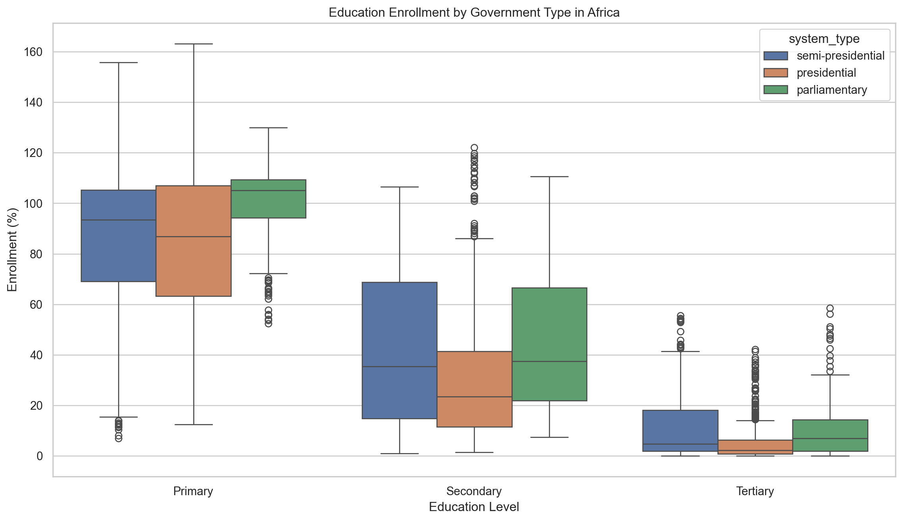
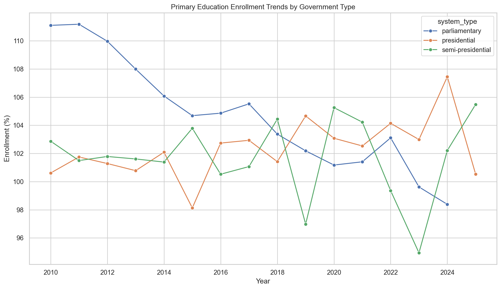
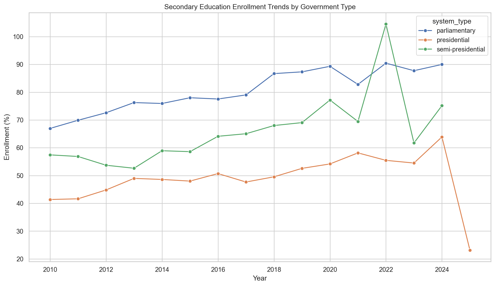
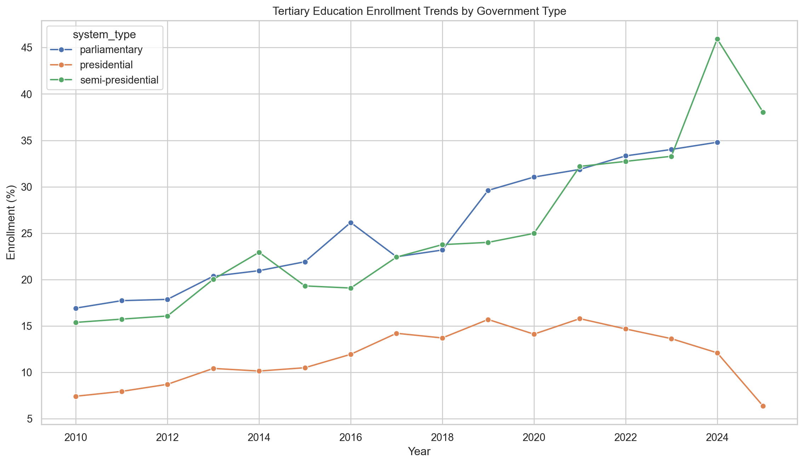

import pandas as pd
import numpy as np
import matplotlib.pyplot as plt
import seaborn as sns
import sqlite3
from pathlib import Path
sns.set_theme(style="whitegrid")
plt.rcParams["figure.figsize"] = (12, 7)Government System Type and Education Enrollment in Africa
A World Bank Education Enrollment Analysis
Introduction
Education access is one of the most important indicators of long-term development. Countries with higher enrollment rates are generally better positioned to improve human capital, expand economic opportunity, and reduce inequality. However, education systems are shaped not only by income and geography, but also by political institutions.
This report examines whether education enrollment differs across African countries with different types of government systems. Specifically, the analysis compares countries categorized as presidential, parliamentary, and semi-presidential systems. The main outcome variables are gross enrollment rates at the primary, secondary, and tertiary education levels.
The central research question is:
How does education enrollment vary by government system type across African countries?
This question is analyzed using cleaned education enrollment data for African countries. The report focuses on both cross-sectional differences between government system types and time trends in enrollment from 2010 onward.
Data Description
The dataset used in this project contains education enrollment data for African countries. The main cleaned dataset is education_africa_cleaned.csv. It includes country-level information such as country name, government type, country code, region, income group, year, and gross enrollment rates for primary, secondary, and tertiary education.
The key variables are:
| Variable | Meaning |
|---|---|
country |
Name of the African country |
government |
Detailed government system classification |
country_code |
Three-letter country code |
region |
Regional classification |
income_group |
World Bank income group |
year |
Calendar year |
school_enrollment,_primary_%_gross |
Gross primary enrollment rate |
school_enrollment,_secondary_%_gross |
Gross secondary enrollment rate |
school_enrollment,_tertiary_%_gross |
Gross tertiary enrollment rate |
Gross enrollment rates can exceed 100% because they include students who are younger or older than the official age group for that education level.
Setup
Load Data
# Load cleaned education dataset
data_path = Path("data/clean-data/education_africa_cleaned.csv")
df = pd.read_csv(data_path)
df.head()| country | government | country_code | region | income_group | year | school_enrollment,_primary_%_gross | school_enrollment,_secondary_%_gross | school_enrollment,_tertiary_%_gross | |
|---|---|---|---|---|---|---|---|---|---|
| 0 | Algeria | semi-presidential unitary republic | DZA | Middle East & North Africa | Upper middle income | 1971.0 | 74.083488 | 12.10871 | NaN |
| 1 | Algeria | semi-presidential unitary republic | DZA | Middle East & North Africa | Upper middle income | 1972.0 | 79.225311 | 12.65980 | NaN |
| 2 | Algeria | semi-presidential unitary republic | DZA | Middle East & North Africa | Upper middle income | 1973.0 | 85.245468 | 14.07465 | NaN |
| 3 | Algeria | semi-presidential unitary republic | DZA | Middle East & North Africa | Upper middle income | 1974.0 | 90.666229 | 15.19896 | NaN |
| 4 | Algeria | semi-presidential unitary republic | DZA | Middle East & North Africa | Upper middle income | 1975.0 | 94.406937 | 16.36799 | NaN |
df.shape(2303, 9)df.info()<class 'pandas.core.frame.DataFrame'>
RangeIndex: 2303 entries, 0 to 2302
Data columns (total 9 columns):
# Column Non-Null Count Dtype
--- ------ -------------- -----
0 country 2303 non-null object
1 government 2303 non-null object
2 country_code 2303 non-null object
3 region 2303 non-null object
4 income_group 2303 non-null object
5 year 2303 non-null float64
6 school_enrollment,_primary_%_gross 2193 non-null float64
7 school_enrollment,_secondary_%_gross 1689 non-null float64
8 school_enrollment,_tertiary_%_gross 1513 non-null float64
dtypes: float64(4), object(5)
memory usage: 162.1+ KBData Cleaning
The original government variable contains detailed descriptions, such as “presidential republic,” “semi-presidential republic,” and “parliamentary republic.” For this analysis, these detailed categories are simplified into three broader government system types:
- Presidential
- Parliamentary
- Semi-presidential
This makes the results easier to interpret and aligns the analysis with the figures comparing education outcomes by system type.
# Standardize column names for easier coding
df = df.rename(columns={
"school_enrollment,_primary_%_gross": "primary_enrollment",
"school_enrollment,_secondary_%_gross": "secondary_enrollment",
"school_enrollment,_tertiary_%_gross": "tertiary_enrollment"
})
# Create simplified government system type
def classify_system(gov):
gov = str(gov).lower()
if "semi-presidential" in gov:
return "semi-presidential"
elif "presidential" in gov:
return "presidential"
elif "parliamentary" in gov:
return "parliamentary"
else:
return "other"
df["system_type"] = df["government"].apply(classify_system)
# Keep only the three main government system types
df = df[df["system_type"].isin(["presidential", "parliamentary", "semi-presidential"])].copy()
df[["country", "government", "system_type", "year", "primary_enrollment", "secondary_enrollment", "tertiary_enrollment"]].head()| country | government | system_type | year | primary_enrollment | secondary_enrollment | tertiary_enrollment | |
|---|---|---|---|---|---|---|---|
| 0 | Algeria | semi-presidential unitary republic | semi-presidential | 1971.0 | 74.083488 | 12.10871 | NaN |
| 1 | Algeria | semi-presidential unitary republic | semi-presidential | 1972.0 | 79.225311 | 12.65980 | NaN |
| 2 | Algeria | semi-presidential unitary republic | semi-presidential | 1973.0 | 85.245468 | 14.07465 | NaN |
| 3 | Algeria | semi-presidential unitary republic | semi-presidential | 1974.0 | 90.666229 | 15.19896 | NaN |
| 4 | Algeria | semi-presidential unitary republic | semi-presidential | 1975.0 | 94.406937 | 16.36799 | NaN |
# Check number of observations by system type
df["system_type"].value_counts()system_type
presidential 1570
semi-presidential 498
parliamentary 235
Name: count, dtype: int64# Check number of countries by system type
df.groupby("system_type")["country"].nunique().reset_index(name="number_of_countries")| system_type | number_of_countries | |
|---|---|---|
| 0 | parliamentary | 5 |
| 1 | presidential | 36 |
| 2 | semi-presidential | 11 |
SQL Descriptive Statistics
The project uses SQL for descriptive statistics. The cleaned dataset is loaded into a SQLite database, and SQL queries are used to summarize average education enrollment by government system type.
conn = sqlite3.connect(":memory:")
df.to_sql("education", conn, index=False, if_exists="replace")2303query = """
SELECT
system_type,
COUNT(*) AS observations,
COUNT(DISTINCT country) AS countries,
ROUND(AVG(primary_enrollment), 2) AS avg_primary_enrollment,
ROUND(AVG(secondary_enrollment), 2) AS avg_secondary_enrollment,
ROUND(AVG(tertiary_enrollment), 2) AS avg_tertiary_enrollment
FROM education
GROUP BY system_type
ORDER BY avg_secondary_enrollment DESC;
"""
summary_by_system = pd.read_sql_query(query, conn)
summary_by_system| system_type | observations | countries | avg_primary_enrollment | avg_secondary_enrollment | avg_tertiary_enrollment | |
|---|---|---|---|---|---|---|
| 0 | parliamentary | 235 | 5 | 99.84 | 45.10 | 11.03 |
| 1 | semi-presidential | 498 | 11 | 85.44 | 41.94 | 11.78 |
| 2 | presidential | 1570 | 36 | 84.57 | 29.60 | 4.90 |
query = """
SELECT
system_type,
MIN(year) AS first_year,
MAX(year) AS last_year,
ROUND(AVG(primary_enrollment), 2) AS mean_primary,
ROUND(AVG(secondary_enrollment), 2) AS mean_secondary,
ROUND(AVG(tertiary_enrollment), 2) AS mean_tertiary
FROM education
GROUP BY system_type;
"""
pd.read_sql_query(query, conn)| system_type | first_year | last_year | mean_primary | mean_secondary | mean_tertiary | |
|---|---|---|---|---|---|---|
| 0 | parliamentary | 1970.0 | 2024.0 | 99.84 | 45.10 | 11.03 |
| 1 | presidential | 1970.0 | 2025.0 | 84.57 | 29.60 | 4.90 |
| 2 | semi-presidential | 1970.0 | 2025.0 | 85.44 | 41.94 | 11.78 |
Exploratory Analysis
Enrollment Distribution by Government System Type
To compare education enrollment across government types, the first figure uses boxplots for primary, secondary, and tertiary enrollment.
# Convert to long format for plotting
plot_df = df.melt(
id_vars=["country", "year", "system_type"],
value_vars=["primary_enrollment", "secondary_enrollment", "tertiary_enrollment"],
var_name="education_level",
value_name="enrollment"
)
plot_df["education_level"] = plot_df["education_level"].replace({
"primary_enrollment": "Primary",
"secondary_enrollment": "Secondary",
"tertiary_enrollment": "Tertiary"
})
# Drop missing values
plot_df = plot_df.dropna(subset=["enrollment"])
plt.figure(figsize=(12, 7))
sns.boxplot(
data=plot_df,
x="education_level",
y="enrollment",
hue="system_type",
order=["Primary", "Secondary", "Tertiary"],
hue_order=["semi-presidential", "presidential", "parliamentary"]
)
plt.title("Education Enrollment by Government Type in Africa")
plt.xlabel("Education Level")
plt.ylabel("Enrollment (%)")
plt.legend(title="system_type")
plt.tight_layout()
plt.show()
The boxplot shows that primary education enrollment is high across all three government system types. This suggests that primary education access has become relatively widespread across the countries included in the dataset. However, secondary and tertiary enrollment show much larger differences.
Parliamentary systems appear to have higher median secondary and tertiary enrollment than presidential systems. Semi-presidential systems also perform relatively well in some years, but they appear more variable. Presidential systems tend to have lower secondary and tertiary enrollment, especially at the tertiary level.
Time Trends Since 2010
Because education systems change over time, the next figures examine average enrollment trends by government type from 2010 onward.
recent_df = df[df["year"] >= 2010].copy()
trend_df = recent_df.groupby(["year", "system_type"], as_index=False).agg(
primary_enrollment=("primary_enrollment", "mean"),
secondary_enrollment=("secondary_enrollment", "mean"),
tertiary_enrollment=("tertiary_enrollment", "mean")
)
trend_df.head()| year | system_type | primary_enrollment | secondary_enrollment | tertiary_enrollment | |
|---|---|---|---|---|---|
| 0 | 2010.0 | parliamentary | 111.098710 | 66.955210 | 16.923071 |
| 1 | 2010.0 | presidential | 100.611273 | 41.375067 | 7.428838 |
| 2 | 2010.0 | semi-presidential | 102.869339 | 57.439662 | 15.385104 |
| 3 | 2011.0 | parliamentary | 111.177340 | 69.892062 | 17.728306 |
| 4 | 2011.0 | presidential | 101.747405 | 41.629098 | 7.950420 |
Primary Enrollment Trends
plt.figure(figsize=(12, 7))
sns.lineplot(
data=trend_df,
x="year",
y="primary_enrollment",
hue="system_type",
marker="o"
)
plt.title("Primary Education Enrollment Trends by Government Type")
plt.xlabel("Year")
plt.ylabel("Enrollment (%)")
plt.legend(title="system_type")
plt.tight_layout()
plt.show()
Primary enrollment remains high across all government system types. Most values are close to or above 100%, which is possible because the variable is a gross enrollment rate. Parliamentary systems show a decline over time, while presidential and semi-presidential systems fluctuate. These fluctuations may reflect real changes, data availability, or the changing composition of country-year observations.
Secondary Enrollment Trends
plt.figure(figsize=(12, 7))
sns.lineplot(
data=trend_df,
x="year",
y="secondary_enrollment",
hue="system_type",
marker="o"
)
plt.title("Secondary Education Enrollment Trends by Government Type")
plt.xlabel("Year")
plt.ylabel("Enrollment (%)")
plt.legend(title="system_type")
plt.tight_layout()
plt.show()
Secondary enrollment shows a clearer separation between system types. Parliamentary systems generally have the highest average secondary enrollment across the period. Presidential systems tend to have the lowest average secondary enrollment. Semi-presidential systems fall between the two for many years, although they show more volatility.
This pattern suggests that differences in education enrollment are more visible at the secondary level than at the primary level. Primary enrollment may be closer to universal in many countries, while secondary education may still depend more strongly on institutional capacity, public investment, and economic conditions.
Tertiary Enrollment Trends
plt.figure(figsize=(12, 7))
sns.lineplot(
data=trend_df,
x="year",
y="tertiary_enrollment",
hue="system_type",
marker="o"
)
plt.title("Tertiary Education Enrollment Trends by Government Type")
plt.xlabel("Year")
plt.ylabel("Enrollment (%)")
plt.legend(title="system_type")
plt.tight_layout()
plt.show()
Tertiary enrollment is much lower than primary and secondary enrollment across all government system types. However, parliamentary and semi-presidential systems tend to have higher tertiary enrollment than presidential systems.
The gap is especially clear after 2015. Parliamentary systems show a steady increase in tertiary enrollment, while presidential systems remain much lower. Semi-presidential systems increase sharply in later years, although this pattern should be interpreted carefully because fewer countries and more missing data may affect the average.
Additional Summary Tables
# Average enrollment by government system type since 2010
recent_summary = recent_df.groupby("system_type").agg(
countries=("country", "nunique"),
observations=("country", "count"),
avg_primary=("primary_enrollment", "mean"),
avg_secondary=("secondary_enrollment", "mean"),
avg_tertiary=("tertiary_enrollment", "mean")
).round(2).reset_index()
recent_summary| system_type | countries | observations | avg_primary | avg_secondary | avg_tertiary | |
|---|---|---|---|---|---|---|
| 0 | parliamentary | 4 | 57 | 105.04 | 79.22 | 23.99 |
| 1 | presidential | 36 | 404 | 102.18 | 49.60 | 11.33 |
| 2 | semi-presidential | 11 | 124 | 101.47 | 62.82 | 23.04 |
# Most recent available average by system type
latest_year = int(df["year"].max())
latest_df = df[df["year"] == latest_year]
latest_summary = latest_df.groupby("system_type").agg(
countries=("country", "nunique"),
avg_primary=("primary_enrollment", "mean"),
avg_secondary=("secondary_enrollment", "mean"),
avg_tertiary=("tertiary_enrollment", "mean")
).round(2).reset_index()
latest_year, latest_summary(2025,
system_type countries avg_primary avg_secondary avg_tertiary
0 presidential 2 100.53 23.13 6.38
1 semi-presidential 2 105.48 NaN 38.04)Results
The analysis shows three main findings.
First, primary education enrollment is high across all government system types. This suggests that primary schooling has expanded broadly across African countries, regardless of whether a country has a presidential, parliamentary, or semi-presidential system.
Second, larger differences appear at the secondary education level. Parliamentary systems generally have higher secondary enrollment than presidential systems. Semi-presidential systems often fall between parliamentary and presidential systems, though they show greater year-to-year variation.
Third, tertiary enrollment is the lowest of the three education levels, but it shows the clearest long-term difference between government types. Parliamentary and semi-presidential systems generally have higher tertiary enrollment than presidential systems. Presidential systems remain lower throughout most of the observed period.
Overall, the results suggest that government system type is associated with differences in education enrollment, especially beyond the primary level. However, this relationship should not be interpreted as causal. Government type may be correlated with other important factors, including income level, colonial history, political stability, public spending, and state capacity.
Limitations
This project has several limitations.
First, the analysis is descriptive and does not prove that government system type causes higher or lower education enrollment. The observed differences may be influenced by income, region, population size, conflict, or historical factors.
Second, the dataset contains missing values, especially for secondary and tertiary education. Because tertiary education has the least complete data, trends at that level should be interpreted cautiously.
Third, the government system categories are simplified. Many countries have more specific institutional arrangements, such as federal presidential republics, unitary presidential republics, constitutional monarchies, or hybrid systems. Grouping them into only three categories makes the analysis easier to interpret, but it may hide important variation.
Fourth, the analysis uses gross enrollment rates. Gross enrollment can exceed 100%, so it should not be interpreted as the exact percentage of children of the official age group enrolled in school.
Conclusion
This report examined education enrollment in African countries by government system type. The analysis found that primary enrollment is high across all systems, but secondary and tertiary enrollment differ more strongly by government type.
Parliamentary systems generally show higher secondary and tertiary enrollment than presidential systems. Semi-presidential systems also show relatively strong outcomes in some years, especially for tertiary education, but with more volatility.
The findings suggest that political institutions may be connected to educational outcomes, particularly at higher levels of education. However, future research should include additional controls such as income group, public education spending, conflict status, and regional effects before making stronger causal claims.
Group Contributions
The project repository was managed using GitHub. Contributions were evaluated using GitHub commit history, additions, deletions, and each group member’s role in the project.
git shortlog -sn --allgit log --all --format='%aN' | sort -u | while read name; do
echo "Author: $name"
git log --all --author="$name" --pretty=tformat: --numstat | \
awk '{ added += $1; deleted += $2 } END { print "Lines added:", added, "Lines deleted:", deleted, "Net lines:", added - deleted }'
echo
doneReferences
World Bank. (2024). World Development Indicators. World Bank.
Project dataset: education_africa_cleaned.csv.
Project codebook: CODEBOOK.md.
Project cleaning script: clean_joined_data.py.